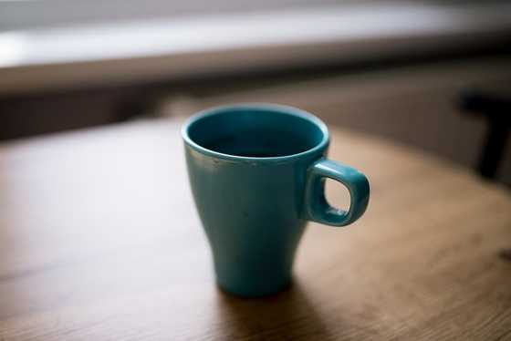
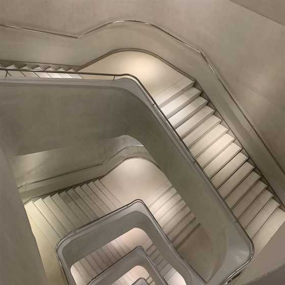
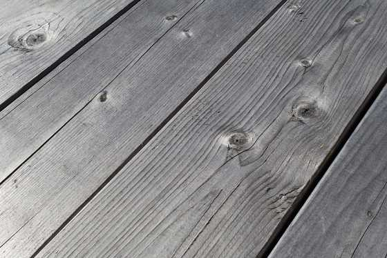
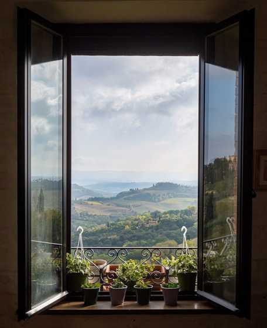
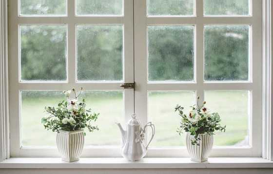
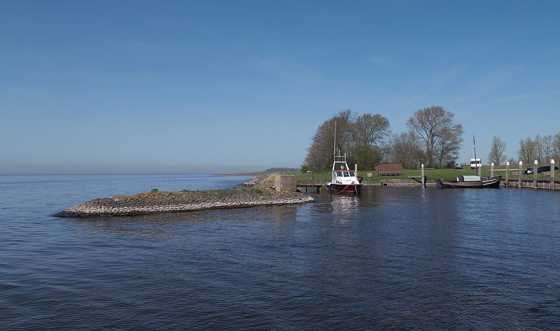

ABOUT
お店のこと
日田市隈にあるカフェです。地域情報サイトでは、開店のきっかけとして、コロナ禍で外出しづらい時期を過ごした経験と、子どもが生まれたときに気軽にコーヒーを飲める場所がなかったことが紹介されています。
子ども連れでも遠慮なく来られること、海外からのお客様も楽しめることを大切にしている、とも紹介されています。
1気軽に入れること。子ども連れも、ひとり時間も。
2コーヒーはカフェインレスにも変更できると紹介されています。
3地元産のフルーツを使ったスムージーなども紹介されています。
店名「steps」の意味は確認できていません。ここに載せた配色や言葉づかいは、制作側のイメージです。

MENU
メニュー
紹介記事などで案内されていた内容です。最新の品書きは店舗でご確認ください。
コーヒー
ブレンド、スペシャルティコーヒー、カフェインレスなど。
抹茶・スイーツ
抹茶ラテ、抹茶パフェ、抹茶テリーヌなど。
スムージー
地元産フルーツを使ったもの。
カレー
オリジナルのスパイスカレー。
| 価格 | 準備中 |
|---|---|
| 営業時間 | 準備中 |
| 定休日 | 準備中 |
| 電話 | 準備中 |








VOICE
口コミ(イメージ例)
以下は制作側が作った例文で、実在のお客様の声ではありません。
イメージ例
子どもを連れていても気兼ねなく座れて、ゆっくりコーヒーを飲めました。
イメージ例
抹茶のスイーツとカレーの両方が楽しめて、昼どきにちょうどよかったです。
イメージ例
カフェインレスに変えてもらえるので、午後でも安心して飲めました。
ACCESS
アクセス
| 住所 | 〒877-0044 大分県日田市隈2丁目5−1 |
|---|---|
| 電話 | 準備中 |
| @steps_5587 |